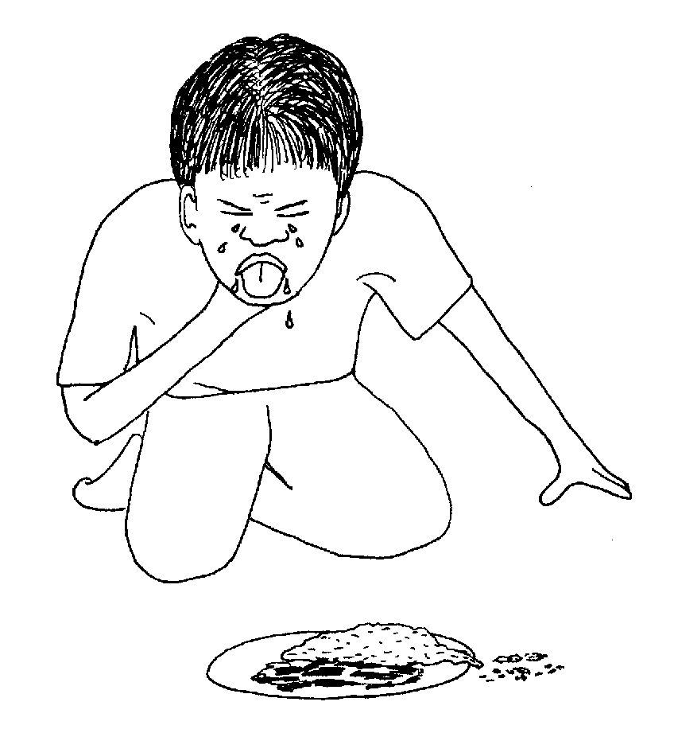
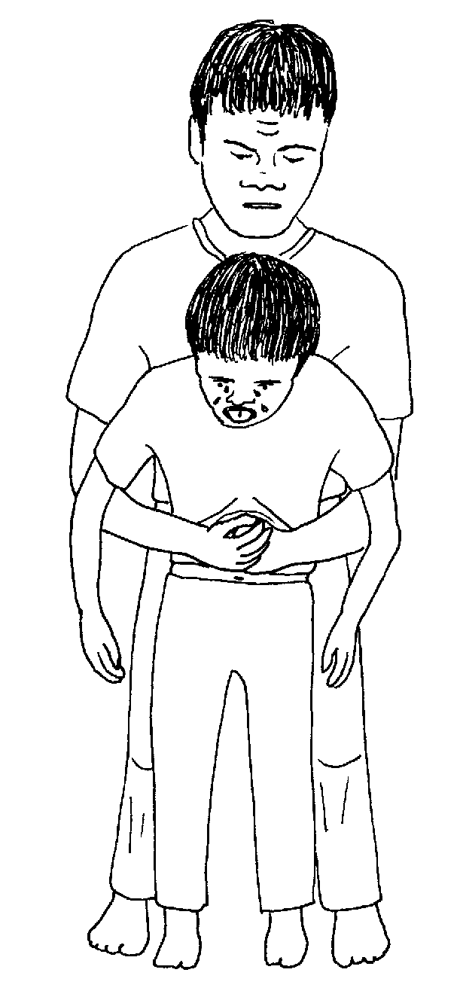
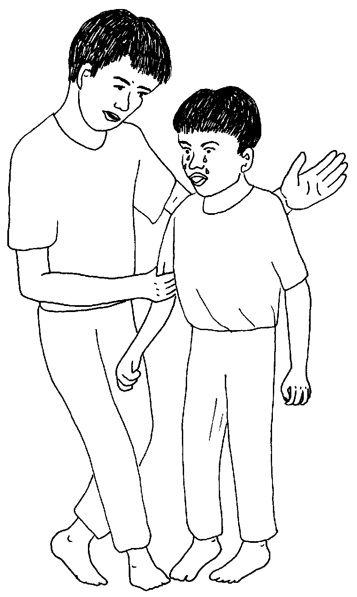
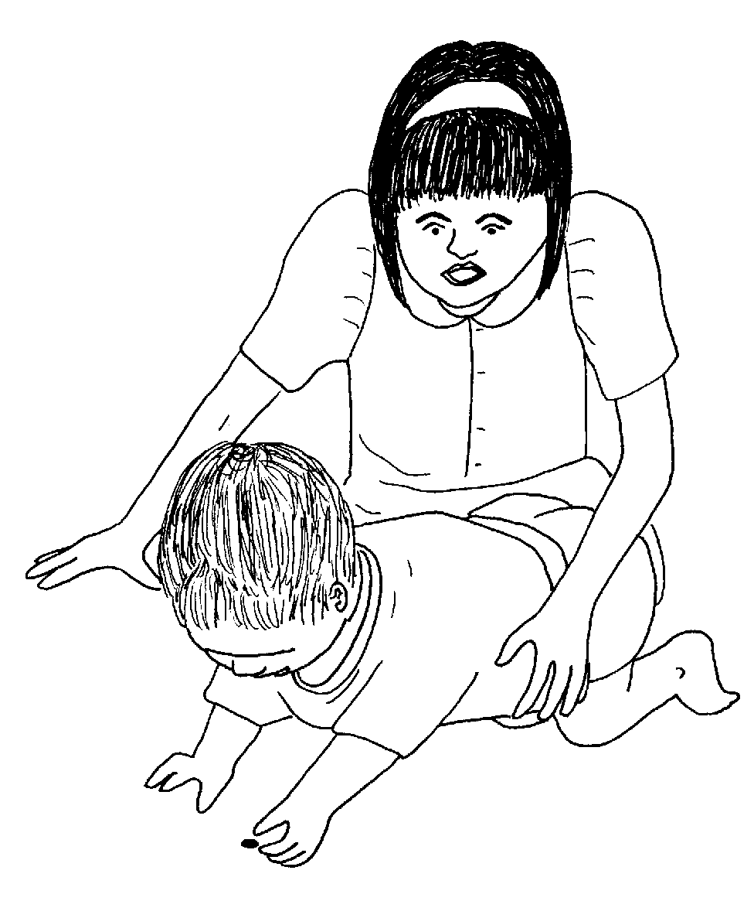
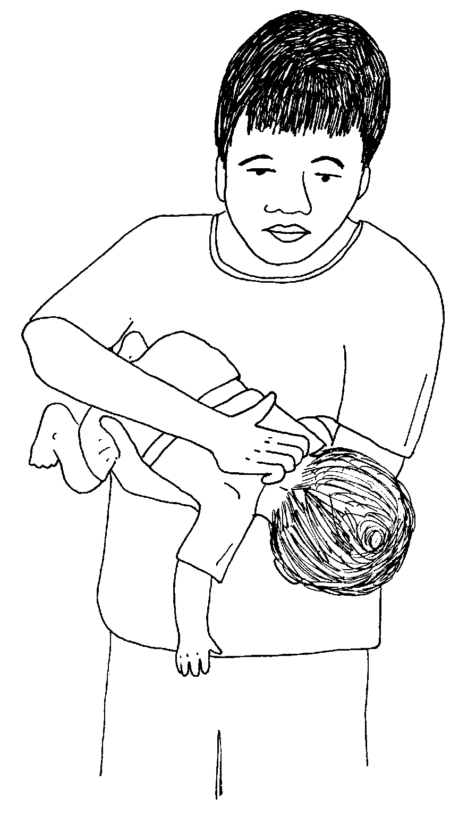

Matigsalug Manobo Healthbooks
Previous Healthbook Up to main Healthbooks page Next Healthbook
Vernacular Lexicon
A
B
BAP
BL
D
E
G
H
I
K
KI
L
LA
LIP
M
N
O
P
PA
R
S
SE
SIN
T
TE
TIN
U
V
W
Y
Z
Healthbooks
Migmangekeen ensi Inuk, Lolita, Junjun, wey si Iwayan te iglabung dan. Sahuhunen migbuwe si Junjun su migbekeg te keenen.
Migpanguleyi si Lolita diyet asawa rin ka migkahi te, “Nekey-a kag gimuwen ta?”

Miggen-genan ni Junjun ka abelengan din su kene din egpakaheheyinawa.
Dagdahawi ni Inuk teg dugpu ka anak din wey ipasasindeg.
Ingkemu ni Inuk ka sabekan belad din te migleheng ki Junjun wey imparapi din diyet seseleben ni Junjun ka belad din.

Ne nataman, intigtigkanan din teg tenes te meemen.
Katatelu intenes ni Inuk ka seseleben ni Junjun ne henduen pad nekeileb. Ne henduen pad man-e ne nakaheheyinawa si Junjun.
Te bayew e nalnalingen-ngen, mig-insaan e ni Inuk si Junjun, “Meupiye e ka inggeram nu kuntee?”

Ne migtabak si Junjun te, “Uya, ame.” Piru hendue te egkaaldek pad sikandin.
Ne mig-abey si Inuk migkahi te, “Kene nug masiyapata teg panungit teg keenen. Keilangan neg sepeen nug ay-ayari kag keenen nu, hendue eg-abelenga.”
Migpangahiyan degma ni Inuk ka duma te, “Ke rueg bekehen, ilingi niyu re ka inggimu ku.”
Ne mig-inse si Iwayan te, “Egkabekeg naan ded degma ka bate?”
Ne migkahi si Inuk te, “Uya, langun ne bate egkabekeg.

“Kene niyug pakeena te me makehal iling te meni ka deisek pad ne bate, ke kene, sikan de se me mewumel neg kakeen ne igbehey te iney rin.”
Migkahi si Inuk te, “Emun ke due bate neg bekehen, palangkeba niyu sikandin piru bayew niyu lusuka ka ulu rin diyet diralem.

“Kataman, dabiya niyu te palad niyu ka ukehungan din.”
Ne mig-abey man-e sikandin migkahi te, “Emun ke keneg katabang, keilangan neg kuliteken niyu ka abelengan din su kema ke due keenen ne nakasengel.
“Wey dabiya niyu man-e ka ukehungan din.”
Ne migkahi si Inuk te, “Keilangan neg dagdahawan niyu teg tanggu ke dueg bekehen, labi e keg malahem e su kema keg patey su kene man-e egpakaheheyinawa.
“Piru kene amanan malehen neg bawian ke dueg kabekeg.”
Nataman, nakaamin ded teg keenen din si Junjun piru hendue te ware din e amana neupii neg keen su neisip-isip din neg patey rin e perem.
Amanan neyinghingesa sikandin te migdagdahawan din tangguwa te amey rin.
Nekey-a kag gimuwen ta ke dueg bekehen?
Egmenuwen taa teg bulig ke due bate neg bekehen?
Nekey-a kag gimuwen ta eyew keneg bekehen ka me dereisek ne bate?
Egdagdahawan teg tenes-tenes ka seseleben din. (Lukib 25)
Bayew nu lusuka teg peyibat ka bate wey gen-geni nu ka kumeng din. Neg kataman, dabiya nu ka ukehungan din. (Lukib 31)
Emun deisek pad ka bate, keilangan ne keneg behayan te makehal neg keenen, sikan de se memewumel. Kene niyu behayi te minsan nekey ne makehal ne kasangkapan ka me bate su kema ke igsungit dan. (Lukib 29)
This page last updated: 28-Dec-2019
Copyright © 2009-2010